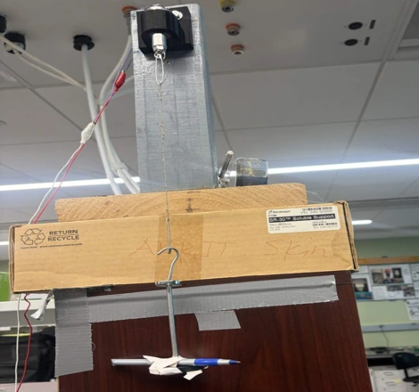
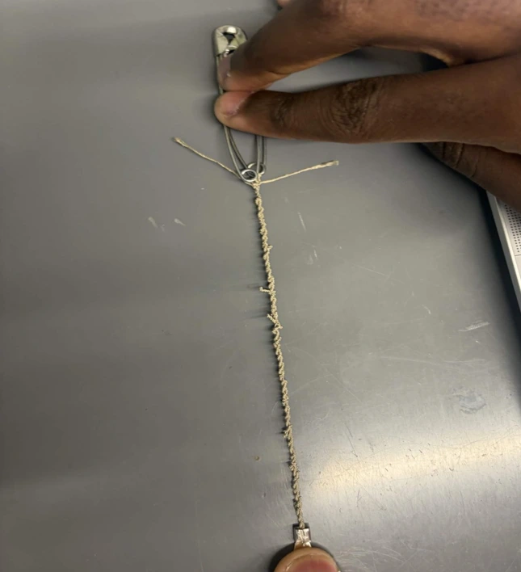
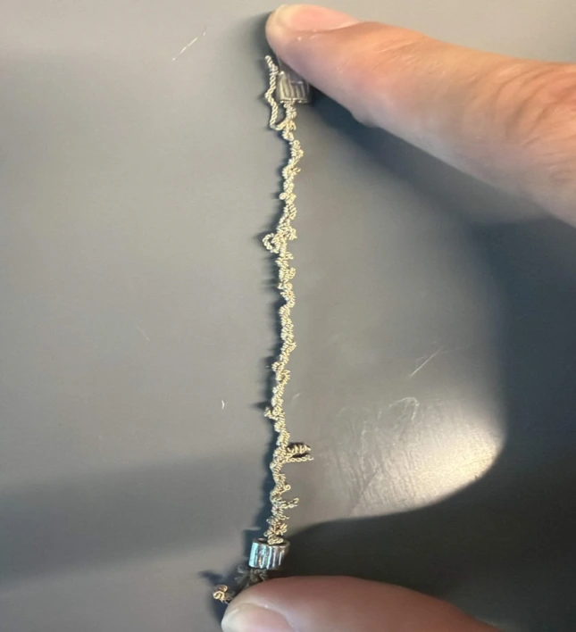
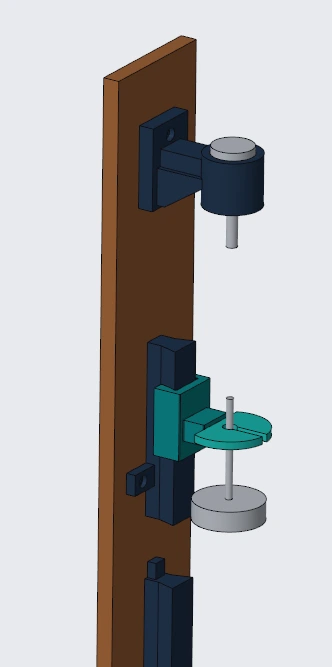
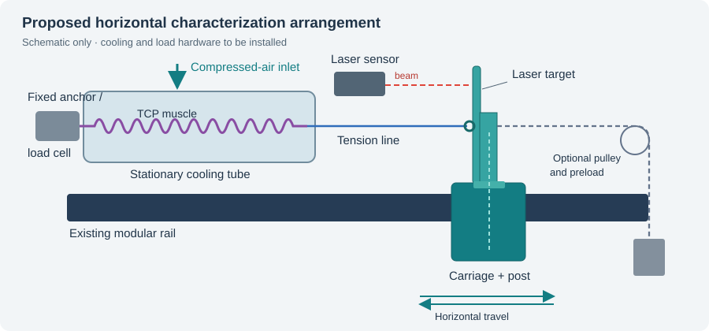
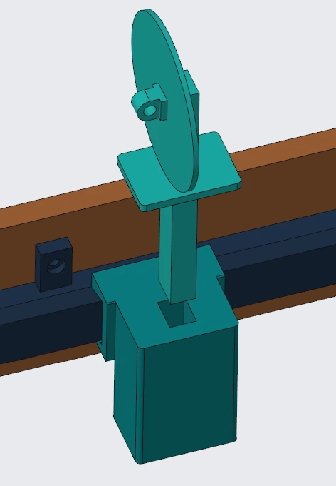
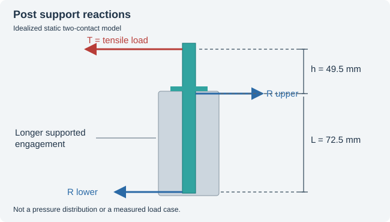

Undergraduate research · HBS Lab · Fall 2026
Modular guide for TCP fabrication and characterization
While fabricating twisted and coiled polymer (TCP) muscles out of silver-coated nylon for our active cooling research, we were running into premature breaking during the coiling process. I wanted to find a way to make fabrication more consistent without changing the entire setup. I was tasked with designing a guide that could be used for fabrication and later reused for horizontal displacement characterization.
1. Troubleshooting the fabrication process
When the motor twists the nylon, the deadweight applies tension and moves upward as the fiber coils. I noticed that the hanging weight could also rotate and move sideways. While looking into the fabrication process, I came across a paper from the University of Calabria that used a 3D-printed weight guide to restrict unwanted movement. This gave me a starting point for testing a guided mechanism in our lab.
Before designing the final parts, I wanted to see whether restricting the movement of the weight was worth pursuing. I compared a preliminary guided setup with an unguided setup and looked at the resulting coils. The guided sample appeared more uniform in the photographs. The comparison was exploratory; it was not a controlled test of breaking rate or muscle length.







The photos are useful for comparing coil appearance. Exact coiled-length improvement will be measured using a ruler, fixed camera geometry and consistent fabrication loads.
2. Selecting a guide mechanism
I started by comparing a sliding rail, a roller guide and a combined roller-and-track design. The roller could reduce sliding resistance, but it also needed an axle, retention features and more moving parts. Since the deadweight was adjustable, I decided that a simple sliding guide was a better starting point. I was more concerned about unpredictable friction and snagging than a small, consistent increase in load.
The lab setup had a 2.125 m upright and needed to accommodate roughly 2 m of precursor fiber. I designed 200 mm interlocking rail sections so they could be printed on a Bambu Lab P1S and screwed to the existing wooden support. The installed guide spans 1.925 m, leaving room for the motor mount. The rail can be taken apart and reused; the moving attachment is the only part that needs to change for a different experiment, along with its carriage.

3. Designing around tension and snagging
One of my main concerns was the amount of extra tension the guide would introduce. If I added a carriage to the deadweight without compensating for its mass and friction, I could recreate the same breaking issue I was trying to solve. I used a force balance to determine how much deadweight should be removed to keep the original fabrication load approximately the same.
Δm = mguide + Fdrag/g
For example, if the guide adds 0.10 N of drag, that is equivalent to about 10.2 g of extra deadweight, in addition to the weight of the printed guide. This is an illustrative load case, not a measured drag value. I can weigh the finished parts and measure their sliding resistance before selecting the actual deadweight.
I also considered the side loads created when the guide prevents the hanger from rotating. A simplified opposing-contact model relates transmitted torque to the rail reactions. For a 0.005 N·m assumed torque and a 30 mm contact separation, each reaction is about 0.167 N. If the assumed sliding friction coefficient is 0.30, the two contacts produce roughly 0.10 N of drag. The actual torque and friction still need to be measured at the fabrication speed.
δ = FL³/(3EI) σ = Mc/I
Using bending and deflection calculations, I looked at how changing the guide thickness, unsupported length and rail support spacing would affect the available clearance. On the first printed carriage, the sliding fit was good, but when I pushed it sideways it could catch on the rail's mounting tabs. Instead of changing the proven sliding fit, I reduced the external faces that could hit the tabs. I also narrowed the entry slot from 5.8 mm to 5.3 mm to improve the fit on our nominal 5 mm hanger. These changes are intended to keep the release easy to use while reducing unwanted movement; the slot is not a positive lock.
4. Reusing the rail for active cooling characterization
The second use for this rail is a horizontal displacement test. In our lab's active cooling research, the TCP is electrically heated to contract and compressed air is passed over it inside a tube to speed up cooling. Singh and Tadesse (2023) used a vertical tube and laser displacement measurements. An earlier Karami and Tadesse (2017) study used horizontal characterization with a linear guide, laser sensor, load cell and a pulley load in still air. I wanted to adapt the existing rail to support a similar horizontal arrangement with active cooling.
In my proposed setup, the cooling tube and fixed end of the muscle stay in place. A tension line from the moving end of the TCP connects to the eye on the rectangular post. As the muscle contracts, the line pulls the carriage horizontally. The circular plate moves with the carriage and gives the laser a surface to measure displacement without aiming into the cooling tube. A controlled opposing preload, such as a pulley and deadweight, is needed to keep the line taut and allow extension during cooling.




I made the post rectangular so it cannot rotate freely inside the carriage and added a flange so the post seats at a consistent height. I increased the circular laser target from 68 mm to 84 mm in diameter, giving about 53% more target area and more room to position the laser away from the tube. The post is centered in the housing to keep the geometry symmetric.
5. Why I made the rectangular socket longer
I wanted the supported part of the post to be longer than the distance from the top of the socket to the muscle connection. The horizontal tension acts above the carriage and creates a moment that can cause the post to tilt. Increasing the distance between the support reactions reduces the contact force needed to resist that moment. Just making the unsupported end of the post longer would not accomplish this.

With a 49.5 mm load height and 72.5 mm supported engagement, a 1 N example tensile force gives a lower reaction of 0.68 N. Halving the engagement to 36.25 mm would increase that reaction to 1.37 N. This is a 50% theoretical reduction in the moment-induced reaction, not a measured friction reduction.
For a preliminary post stiffness check, using its 16 × 12 mm section about the weaker axis and an assumed effective printed modulus of 1,000 MPa, I obtain I = 2,304 mm⁴, approximately 0.018 mm exposed-post deflection and 0.13 MPa nominal root bending stress at the same 1 N illustrative load. This simplified calculation excludes socket and rail deformation, local stresses and layer anisotropy. It gives me a starting point for the geometry, not an experimentally verified safety factor.
In the horizontal setup the guide's weight increases the normal force on the rail, so I also need to keep moving mass reasonable. Reducing infill can help with mass but may reduce stiffness. I will check actual sliding resistance under load rather than assume lower infill will prevent binding.
6. Manufacturing and current testing
I chose different print settings based on the function of each part. The rails are backed by wood, so I kept their infill low and used four walls around the mounting and sliding features. The motor mount has more walls and infill to resist bending and reaction torque. The carriage needs enough stiffness to avoid binding, but it also adds moving mass.
| Component | Initial infill | Wall loops |
|---|---|---|
| Rails | 15% | 4 |
| Motor mount | 40% | 6 |
| Vertical carriage | 30% | 5 |
| Vertical quick-release plate | 25% | 4 |
Initial PLA prototype settings: 0.20 mm layers, gyroid infill. These were selected based on loading and manufacturability rather than experimental optimization; revised horizontal print settings remain to be confirmed.

For repeated use, I will measure the printed parts' fit, loaded deflection, friction and permanent dimensional change. A low calculated bending stress alone does not rule out PLA creep or wear, especially near a heated actuator. I also need to check the motor mount against combined bending and motor torque, and validate the load range before running repeated fabrication or characterization cycles.
Current status — November 2026: Initial fabrication prototypes have been printed and checked for sliding fit. The revised vertical carriage and horizontal characterization concept are modeled; physical implementation and validation are in progress. I plan to add photos of the completed setup and measured friction, displacement and cycle results as testing progresses.
Research references
Garofalo et al. (2025). Production Parameters and Thermo-Mechanical Performance of Twisted and Coiled Artificial Muscles (TCAMs). University of Calabria; Fig. 4.
Singh, A. P., & Tadesse, Y. (2023). Exploring 6-Ply Twisted and Coiled Polymer Actuators With Active Cooling and Position Control. ASME SMASIS.
Karami, F., & Tadesse, Y. (2017). Modeling of twisted and coiled polymer (TCP) muscle based on phenomenological approach. Smart Materials and Structures; Fig. 6.